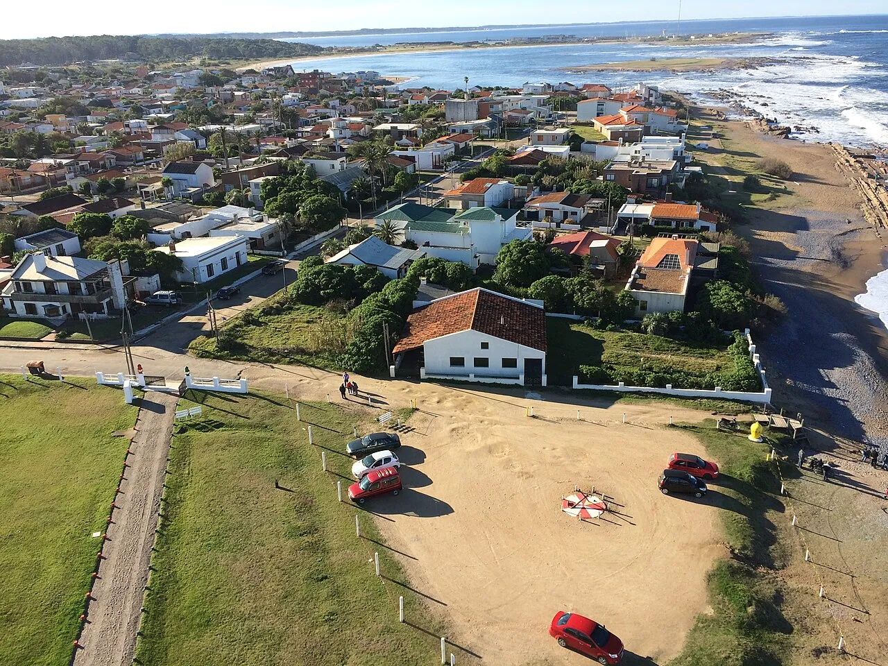

La Paloma
Rocha, Uruguay · surf, baignade

Station tranquille avec plusieurs plages orientées différemment, pour trouver des vagues quel que soit le vent.
- Lieu
- Rocha, Uruguay
- Niveau
- Débutant
- Activités
- surf, baignade
- Type d'eau
- Mer / océan
- Coordonnées
- -34.66, -54.16 (position approximative du secteur)
Dangers à connaître
- Eau fraîche.
- Courants aux pointes.
Le conseil d'Ocean Buddy
Change de plage selon le vent : il y en a toujours une abritée.
Ouvrir dans Ocean Buddy Télécharger sur l'App Store
Source : Fiche Ocean Buddy · septembre 2026 · à vérifier localement.